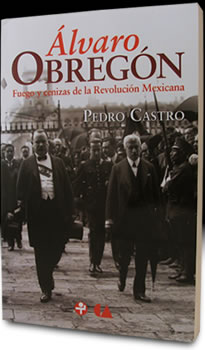
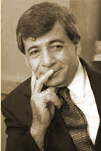

- Inicio
- Publicaciones
- Álvaro Obregón fuego y cenizas de la Revolución Mexicana
- Adolfo de la Huerta El desconocido de Roberto Guzmán Esparza
- A la Sombra de un Caudillovida y muerte del general Francisco R. Serrano
- Soto y Gamagenio y figura
- Adolfo de la Huerta Serie Grandes Protagonistas de la Historia Mexicana
- Historia del Agrarismo en México
- Ciudad Cuauhtémoc, Chihuahuacrónica de su fundación
- Adolfo de la Huerta: la integridad como arma de la revolución
- Adolfo de la Huerta y la Revolución Mexicana
- Fronteras Abiertasgeopolítica y expansionismo en Brasil contemporáneo
- Currículum
Álvaro Obregón
Fuego y cenizas de la Revolución Mexicana
Esta biografía documenta los aspectos principales de la vida política del Caudillo y ayuda a entender los motivos de sus decisiones, el peso de su férrea voluntad de acumular poder y perpetuarse en él, contra todo y contra todos, así como su influencia en la reconstrucción del Estado mexicano.
Por este libro el autor recibió el prestigiado Premio Francisco Javier Clavijero de Investigación, correspondiente a 2010, otorgado por el Instituto Nacional de Antropología e Historia (INAH).
Mas información >>


Semblanza de Pedro Castro
Pedro Castro Martínez nació en Ciudad Cuauhtémoc, Chih., el 16 de junio de 1952. Es Doctor en Historia por la Facultad de Filosofía y Letras de la UNAM, Maestro en Estudios Latinoamericanos por la Universidad de Londres y Licenciado en Relaciones Internacionales por El Colegio de México. Es profesor-investigador del Departamento de Sociología de la Universidad Autónoma Metropolitana-Iztapalapa desde hace más de dos décadas. Entre sus obras de historia mexicana se encuentran:
- Adolfo de la Huerta y la Revolución Mexicana. México (Instituto de Estudios Históricos de la Revolución Mexicana - Universidad Autónoma Metropolitana. 1990);
- Adolfo de la Huerta: la integridad como arma de la revolución (Universidad Autónoma Metropolitana-Iztapalapa - Siglo XXI Editores. 1999);
- Ciudad Cuauhtémoc, Chihuahua: crónica de su fundación (FONCA-Universidad Autónoma Metropolitana-Iztapalapa. 2000);
- Historia del Agrarismo en México: rescate, prólogo y estudio biográfico por Pedro Castro (Autor: Antonio Díaz Soto y Gama. Pedro Castro, editor. México: Ediciones Era-Universidad Autónoma Metropolitana-Iztapalapa. 2002);
- Soto y Gama: genio y figura. (Universidad Autónoma Metropolitana. Cultura Universitaria/ Serie Ensayo 74. 2002);
- A la Sombra de un Caudillo: vida y muerte del general Francisco R. Serrano (Plaza & Janés, 2005);
- Adolfo de la Huerta, El desconocido, de Roberto Guzmán Esparza. Estudio preliminar, rescate e iconografía de Pedro Castro (Universidad Autónoma Metropolitana 2009);
- Álvaro Obregón, fuego y cenizas de la Revolución Mexicana (Ediciones Era-Conaculta, 2009)
- Adolfo de la Huerta, Grandes Protagonistas de la Historia Mexicana, Colección dirigida por José Manuel Villalpando (Planeta DeAgostini, 2002)
- Carlos A. Madrazo: el último mito político mexicano del siglo XX (Planeta, 2016)
- Carlos A. Madrazo: pensamiento y acción para tiempos inciertos, Edición, biografía mínima de Madrazo y presentación de Pedro Castro (Bonilla Artigas Editor, 2020)
- El Fabuloso Saqueo del Cenote Sagrado de Chichén Itzá (Universidad Autónoma Metropolitana Iztapalapa-Tirant lo Blanch, 2016)
- Le grand Cenote Sacré de Chichen Itza: Chronique d'une fabuleux pillage du patrimoine archéologique mexicain, son auteur at ses complices (Edition francaise) (Amazon Books, 2018)
- The Looting of the Sacred Cenote of Chichen Itza, (English edition) (Amazon Books, 2019)
- El Vuelo de la Utopía: Revolución y educación rural en los años del Presidente Calles (1924-1928) (Agencia Promotora de Ediciones, 2014)
Como parte de nuestra actividad académica, asesoramos respecto al mejor destino institucional de publicaciones y documentos históricos de México, y a encontrar el repositorio para su mejor resguardo y conservación. Asimismo, orientamos a interesados sobre temas relacionados con la historia de México en el marco de la divulgación académica de nuestra Universidad Autónoma Metropolitana.